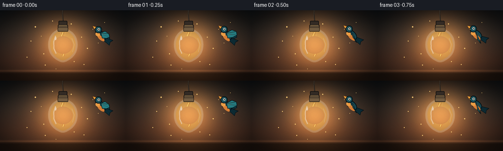
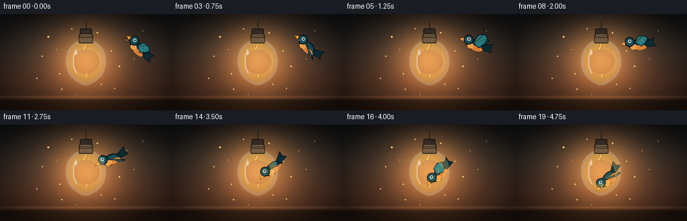
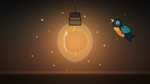
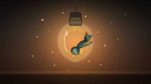
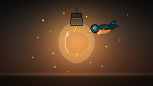
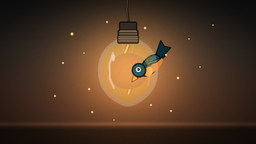
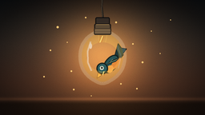

CODING AGENTS AS PIXEL WORLD MODELS
traex/DeepSeek-V4.1-Flash · dynamic_spatial_relationship_0043
点击播放 · 原生 RGB 像素
逐轮保存的候选
回放视频、检查图与代码变化。
每份候选均可单独播放。实际图片检查记录在下方工具轨迹中。
候选 01播放与检查图
点击播放 · 原生 RGB 像素


展开代码变化
--- 上一保存版本
+++ 本次保存版本
@@ -0,0 +1,435 @@
+from pathlib import Path
+import math
+
+import numpy as np
+from PIL import Image, ImageDraw, ImageFilter
+
+import artifact_io
+
+
+W, H = 256, 144
+SS = 4
+IW, IH = W * SS, H * SS
+FRAMES = 20
+FPS = 4.0
+
+
+def rgba(color):
+ if len(color) == 3:
+ return (*color, 255)
+ return color
+
+
+def smoothstep(x):
+ x = min(1.0, max(0.0, x))
+ return x * x * (3.0 - 2.0 * x)
+
+
+def cubic_bezier(p0, p1, p2, p3, t):
+ u = 1.0 - t
+ return (
+ u * u * u * p0[0]
+ + 3.0 * u * u * t * p1[0]
+ + 3.0 * u * t * t * p2[0]
+ + t * t * t * p3[0],
+ u * u * u * p0[1]
+ + 3.0 * u * u * t * p1[1]
+ + 3.0 * u * t * t * p2[1]
+ + t * t * t * p3[1],
+ )
+
+
+def cubic_bezier_tangent(p0, p1, p2, p3, t):
+ u = 1.0 - t
+ return (
+ 3.0 * u * u * (p1[0] - p0[0])
+ + 6.0 * u * t * (p2[0] - p1[0])
+ + 3.0 * t * t * (p3[0] - p2[0]),
+ 3.0 * u * u * (p1[1] - p0[1])
+ + 6.0 * u * t * (p2[1] - p1[1])
+ + 3.0 * t * t * (p3[1] - p2[1]),
+ )
+
+
+def catmull_rom_closed(points, samples_per_segment=14):
+ out = []
+ n = len(points)
+ for i in range(n):
+ p0 = points[(i - 1) % n]
+ p1 = points[i]
+ p2 = points[(i + 1) % n]
+ p3 = points[(i + 2) % n]
+ for j in range(samples_per_segment):
+ t = j / samples_per_segment
+ t2 = t * t
+ t3 = t2 * t
+ x = 0.5 * (
+ 2.0 * p1[0]
+ + (-p0[0] + p2[0]) * t
+ + (2.0 * p0[0] - 5.0 * p1[0] + 4.0 * p2[0] - p3[0]) * t2
+ + (-p0[0] + 3.0 * p1[0] - 3.0 * p2[0] + p3[0]) * t3
+ )
+ y = 0.5 * (
+ 2.0 * p1[1]
+ + (-p0[1] + p2[1]) * t
+ + (2.0 * p0[1] - 5.0 * p1[1] + 4.0 * p2[1] - p3[1]) * t2
+ + (-p0[1] + 3.0 * p1[1] - 3.0 * p2[1] + p3[1]) * t3
+ )
+ out.append((x, y))
+ return out
+
+
+def make_background():
+ yy, xx = np.mgrid[0:IH, 0:IW].astype(np.float32)
+ v = yy / (IH - 1)
+
+ top = np.array([7.0, 18.0, 27.0], dtype=np.float32)
+ middle = np.array([25.0, 43.0, 49.0], dtype=np.float32)
+ bottom = np.array([66.0, 45.0, 38.0], dtype=np.float32)
+
+ lower_mix = np.clip(v / 0.72, 0.0, 1.0)[..., None]
+ upper_mix = np.clip(v / 0.40, 0.0, 1.0)[..., None]
+ img = top[None, None, :] * (1.0 - upper_mix) + middle[None, None, :] * upper_mix
+ img = img * (1.0 - lower_mix) + bottom[None, None, :] * lower_mix
+
+ # A soft pool of warm light on the wall, centered on the bulb.
+ cx, cy = 128.0 * SS, 67.0 * SS
+ d2 = ((xx - cx) / (85.0 * SS)) ** 2 + ((yy - cy) / (76.0 * SS)) ** 2
+ halo = np.exp(-d2 * 2.2)[..., None]
+ img += halo * np.array([82.0, 44.0, 16.0], dtype=np.float32)
+
+ # A low, quiet desk edge gives the hanging bulb a grounded space.
+ desk_y = 124.0 * SS
+ desk_mask = np.clip((yy - desk_y) / (6.0 * SS), 0.0, 1.0)[..., None]
+ desk_color = np.array([27.0, 20.0, 18.0], dtype=np.float32)
+ img = img * (1.0 - desk_mask) + desk_color * desk_mask
+ edge = np.exp(-((yy - desk_y) / (2.1 * SS)) ** 2)[..., None]
+ img += edge * np.array([42.0, 25.0, 13.0], dtype=np.float32)
+
+ # Fine, deterministic film grain keeps the large color fields alive.
+ rng = np.random.default_rng(43)
+ grain = rng.normal(0.0, 2.4, (IH, IW, 1)).astype(np.float32)
+ img += grain
+
+ # Vignette.
+ nx = (xx - IW * 0.5) / (IW * 0.5)
+ ny = (yy - IH * 0.5) / (IH * 0.5)
+ vignette = np.clip(1.0 - 0.34 * (nx * nx + ny * ny), 0.54, 1.0)
+ img *= vignette[..., None]
+ return np.clip(img, 0.0, 255.0)
+
+
+def make_radial_glow(center, sigma, color, strength):
+ yy, xx = np.mgrid[0:IH, 0:IW].astype(np.float32)
+ cx, cy = center[0] * SS, center[1] * SS
+ d2 = ((xx - cx) ** 2 + (yy - cy) ** 2) / (2.0 * (sigma * SS) ** 2)
+ field = np.exp(-d2)[..., None]
+ return field * np.array(color, dtype=np.float32) * strength
+
+
+def draw_cord_and_socket(layer):
+ draw = ImageDraw.Draw(layer)
+ cx = 128.0 * SS
+ cord = [(cx, -4.0 * SS), (cx - 1.0 * SS, 8.0 * SS), (cx + 0.7 * SS, 22.0 * SS)]
+ draw.line(cord, fill=(31, 29, 26, 255), width=int(2.4 * SS), joint="curve")
+ draw.line(
+ [(cx - 0.5 * SS, -2.0 * SS), (cx - 1.2 * SS, 10.0 * SS), (cx + 0.2 * SS, 21.0 * SS)],
+ fill=(93, 75, 57, 90),
+ width=int(0.8 * SS),
+ joint="curve",
+ )
+
+ draw.rounded_rectangle(
+ [119.0 * SS, 21.5 * SS, 137.0 * SS, 31.5 * SS],
+ radius=2.0 * SS,
+ fill=(55, 46, 39, 255),
+ outline=(19, 18, 17, 255),
+ width=int(1.4 * SS),
+ )
+ draw.rounded_rectangle(
+ [117.5 * SS, 29.5 * SS, 138.5 * SS, 43.0 * SS],
+ radius=2.2 * SS,
+ fill=(118, 97, 70, 255),
+ outline=(35, 29, 23, 255),
+ width=int(1.7 * SS),
+ )
+ for y in (32.5, 35.4, 38.3, 41.2):
+ draw.line(
+ [(118.4 * SS, y * SS), (137.6 * SS, y * SS)],
+ fill=(48, 37, 28, 155),
+ width=int(0.75 * SS),
+ )
+ draw.line(
+ [(120.0 * SS, 30.6 * SS), (136.0 * SS, 30.6 * SS)],
+ fill=(218, 173, 98, 110),
+ width=int(0.7 * SS),
+ )
+
+
+def wing_points(flap, far=False):
+ lift = 15.5 * flap
+ if far:
+ lift *= 0.88
+ offset = (2.4, 1.8)
+ else:
+ offset = (0.0, 0.0)
+ points = [
+ (-5.0, -3.0),
+ (-1.0, -7.0 - lift * 0.60),
+ (8.0, -5.2 - lift),
+ (14.2, -2.0 - lift * 0.92),
+ (10.5, 1.2 - lift * 0.42),
+ (4.0, 3.2),
+ ]
+ return [(x + offset[0], y + offset[1]) for x, y in points]
+
+
+def draw_bird_tile(flap):
+ tile = Image.new("RGBA", (86 * SS, 86 * SS), (0, 0, 0, 0))
+ draw = ImageDraw.Draw(tile)
+ c = 43.0
+
+ def p(x, y):
+ return ((c + x) * SS, (c + y) * SS)
+
+ def poly(points, fill, outline, width=1.4):
+ pts = [p(x, y) for x, y in points]
+ draw.polygon(pts, fill=rgba(fill))
+ draw.line(pts + [pts[0]], fill=rgba(outline), width=max(1, int(width * SS)), joint="curve")
+
+ # Far wing, tail, and body.
+ poly(wing_points(flap, far=True), (18, 63, 73, 255), (5, 19, 24, 255), 1.0)
+ poly(
+ [(8.0, -2.0), (23.5, -8.0), (21.5, -1.4), (24.5, 4.5), (8.0, 5.0)],
+ (14, 45, 54, 255),
+ (5, 18, 23, 255),
+ 1.2,
+ )
+ draw.ellipse(
+ [p(-15.5, -7.3), p(11.0, 8.2)],
+ fill=(24, 73, 83, 255),
+ outline=(5, 19, 24, 255),
+ width=int(1.6 * SS),
+ )
+ draw.ellipse([p(-8.0, 1.0), p(11.0, 8.3)], fill=(226, 132, 55, 255))
+ draw.ellipse([p(-13.0, -1.0), p(-3.0, 7.2)], fill=(246, 164, 73, 255))
+
+ # Head and face.
+ draw.ellipse(
+ [p(-20.5, -12.2), p(-5.8, 2.4)],
+ fill=(29, 84, 94, 255),
+ outline=(5, 19, 24, 255),
+ width=int(1.6 * SS),
+ )
+ draw.ellipse([p(-15.3, -8.2), p(-10.6, -3.5)], fill=(250, 247, 228, 255))
+ draw.ellipse([p(-14.2, -7.2), p(-11.7, -4.6)], fill=(5, 17, 21, 255))
+ draw.ellipse([p(-13.7, -6.7), p(-12.9, -5.9)], fill=(255, 255, 255, 230))
+ poly(
+ [(-20.2, -6.0), (-27.0, -3.0), (-20.0, -0.2)],
+ (255, 174, 65, 255),
+ (113, 58, 20, 255),
+ 0.8,
+ )
+
+ # Near wing and feather ridges.
+ near = wing_points(flap, far=False)
+ poly(near, (40, 132, 137, 255), (5, 21, 27, 255), 1.2)
+ draw.line(
+ [p(near[0][0] + 1.2, near[0][1] + 0.2), p(near[2][0] - 0.8, near[2][1] + 0.8)],
+ fill=(13, 55, 61, 145),
+ width=int(0.75 * SS),
+ )
+ draw.line(
+ [p(near[0][0] + 2.6, near[0][1] + 0.9), p(near[3][0] - 1.2, near[3][1] + 0.5)],
+ fill=(13, 55, 61, 120),
+ width=int(0.7 * SS),
+ )
+ draw.line(
+ [p(-2.0, -2.0), p(4.0, -4.0 - 5.0 * flap)],
+ fill=(150, 226, 210, 105),
+ width=int(0.6 * SS),
+ )
+ return tile
+
+
+def composite_bird(base, center, angle_deg, flap):
+ tile = draw_bird_tile(flap)
+ rotated = tile.rotate(angle_deg, resample=Image.Resampling.BICUBIC, expand=True)
+ dest = (
+ int(round(center[0] * SS - rotated.width * 0.5)),
+ int(round(center[1] * SS - rotated.height * 0.5)),
+ )
+ base.alpha_composite(rotated, dest=dest)
+
+
+def make_bulb_layer():
+ layer = Image.new("RGBA", (IW, IH), (0, 0, 0, 0))
+ draw = ImageDraw.Draw(layer)
+
+ bulb_control = [
+ (128.0, 37.5),
+ (136.0, 40.0),
+ (146.5, 47.0),
+ (153.5, 57.0),
+ (156.0, 71.0),
+ (153.0, 85.5),
+ (145.0, 96.0),
+ (135.0, 102.5),
+ (128.0, 104.5),
+ (121.0, 102.5),
+ (111.0, 96.0),
+ (103.0, 85.5),
+ (100.0, 71.0),
+ (102.5, 57.0),
+ (109.5, 47.0),
+ (120.0, 40.0),
+ ]
+ smooth = catmull_rom_closed(bulb_control, samples_per_segment=14)
+ glass_pts = [(x * SS, y * SS) for x, y in smooth]
+
+ # Warm glass body. Its transparency lets the bird remain legible behind it.
+ draw.polygon(glass_pts, fill=(255, 205, 89, 82))
+ draw.line(glass_pts + [glass_pts[0]], fill=(255, 225, 151, 232), width=int(2.0 * SS), joint="curve")
+ draw.line(glass_pts + [glass_pts[0]], fill=(255, 244, 204, 60), width=int(4.3 * SS), joint="curve")
+
+ # Filament and support wires.
+ filament = [(128, 45), (124, 55), (131, 65), (124, 76), (131, 86), (128, 94)]
+ filament_px = [(x * SS, y * SS) for x, y in filament]
+ draw.line(filament_px, fill=(255, 174, 53, 70), width=int(5.2 * SS), joint="curve")
+ draw.line(filament_px, fill=(255, 218, 100, 245), width=int(1.25 * SS), joint="curve")
+ draw.line(filament_px, fill=(255, 255, 226, 210), width=max(1, int(0.45 * SS)), joint="curve")
+ draw.line(
+ [(122.5 * SS, 43.5 * SS), (124.0 * SS, 55.0 * SS)],
+ fill=(255, 202, 95, 170),
+ width=max(1, int(0.65 * SS)),
+ )
+ draw.line(
+ [(133.5 * SS, 43.5 * SS), (131.0 * SS, 55.0 * SS)],
+ fill=(255, 202, 95, 170),
+ width=max(1, int(0.65 * SS)),
+ )
+ draw.ellipse(
+ [p for p in ((126.5 * SS, 64.0 * SS), (130.0 * SS, 67.5 * SS))],
+ fill=(255, 242, 170, 120),
+ )
+
+ # Soft internal light and reflections.
+ for radius, alpha in ((20, 18), (13, 22), (7, 28)):
+ draw.ellipse(
+ [
+ (128 - radius) * SS,
+ (71 - radius * 0.9) * SS,
+ (128 + radius) * SS,
+ (71 + radius * 0.9) * SS,
+ ],
+ fill=(255, 212, 106, alpha),
+ )
+ draw.line(
+ [(113.0 * SS, 52.0 * SS), (109.4 * SS, 64.0 * SS), (109.6 * SS, 78.0 * SS), (114.2 * SS, 88.5 * SS)],
+ fill=(255, 250, 226, 126),
+ width=int(2.0 * SS),
+ joint="curve",
+ )
+ draw.ellipse(
+ [111.3 * SS, 54.2 * SS, 114.8 * SS, 61.0 * SS],
+ fill=(255, 255, 242, 148),
+ )
+ draw.line(
+ [(146.2 * SS, 57.0 * SS), (151.2 * SS, 70.0 * SS), (147.5 * SS, 85.5 * SS)],
+ fill=(255, 246, 214, 88),
+ width=int(1.0 * SS),
+ joint="curve",
+ )
+
+ # Metal cap and screw threads.
+ draw.rounded_rectangle(
+ [117.2 * SS, 34.8 * SS, 138.8 * SS, 43.5 * SS],
+ radius=1.8 * SS,
+ fill=(127, 103, 73, 255),
+ outline=(43, 34, 26, 255),
+ width=int(1.2 * SS),
+ )
+ for y in (37.0, 39.7, 42.2):
+ draw.line(
+ [(117.7 * SS, y * SS), (138.3 * SS, y * SS)],
+ fill=(55, 42, 30, 180),
+ width=max(1, int(0.7 * SS)),
+ )
+ return layer
+
+
+def draw_dust(layer, frame_index):
+ draw = ImageDraw.Draw(layer)
+ motes = [
+ (72, 34, 1.3), (89, 89, 1.0), (107, 22, 0.9), (145, 28, 1.1),
+ (166, 55, 0.8), (178, 78, 1.2), (63, 63, 0.8), (151, 105, 0.9),
+ (92, 112, 1.0), (189, 39, 0.7), (55, 96, 0.8), (200, 67, 0.7),
+ (114, 120, 0.7), (171, 111, 0.8), (84, 53, 0.7), (213, 25, 0.6),
+ ]
+ for idx, (x, y, size) in enumerate(motes):
+ twinkle = 0.55 + 0.45 * math.sin(frame_index * 0.9 + idx * 1.7)
+ alpha = int(32 + 44 * twinkle)
+ r = size * SS
+ draw.ellipse(
+ [x * SS - r, y * SS - r, x * SS + r, y * SS + r],
+ fill=(255, 208, 122, alpha),
+ )
+
+
+def make_frames():
+ background = make_background()
+ inner_glow = make_radial_glow((128.0, 69.0), 30.0, (255, 187, 82), 0.21)
+ outer_glow = make_radial_glow((128.0, 69.0), 78.0, (232, 119, 35), 0.18)
+ bulb = make_bulb_layer()
+ bulb_bloom = bulb.filter(ImageFilter.GaussianBlur(9.0 * SS))
+ bulb_bloom.putalpha(bulb_bloom.getchannel("A").point(lambda a: int(a * 0.34)))
+
+ p0 = (207.0, 52.0)
+ p1 = (191.0, 38.0)
+ p2 = (162.0, 44.0)
+ p3 = (139.0, 79.0)
+
+ frames = []
+ for index in range(FRAMES):
+ raw_t = index / (FRAMES - 1)
+ t = smoothstep(raw_t)
+ pos = cubic_bezier(p0, p1, p2, p3, t)
+ vel = cubic_bezier_tangent(p0, p1, p2, p3, t)
+ angle = math.atan2(-vel[1], -vel[0])
+ # A small bank and pitch accent keeps the flight from feeling mechanical.
+ angle += math.radians(4.0 * math.sin(index * 0.82))
+ angle_deg = -math.degrees(angle)
+ flap = math.sin(2.0 * math.pi * (index / 4.0 + 0.08))
+
+ flicker = 1.0 + 0.018 * math.sin(index * 1.31) + 0.009 * math.sin(index * 2.73 + 0.6)
+ arr = background + (inner_glow + outer_glow) * flicker
+ base = Image.fromarray(np.clip(arr, 0.0, 255.0).astype(np.uint8), "RGB").convert("RGBA")
+
+ draw_cord_and_socket(base)
+ base.alpha_composite(bulb_bloom)
+ composite_bird(base, pos, angle_deg, flap)
+ base.alpha_composite(bulb)
+ draw_dust(base, index)
+
+ final = np.asarray(base.convert("RGB"), dtype=np.float32)
+ # Gentle final vignette and warm highlight roll-off.
+ yy, xx = np.mgrid[0:IH, 0:IW].astype(np.float32)
+ nx = (xx - IW * 0.5) / (IW * 0.5)
+ ny = (yy - IH * 0.5) / (IH * 0.5)
+ vig = np.clip(1.0 - 0.12 * (nx * nx + ny * ny), 0.82, 1.0)[..., None]
+ final *= vig
+ final = np.clip(final, 0.0, 255.0)
+ frame = Image.fromarray(final.astype(np.uint8), "RGB").resize((W, H), Image.Resampling.LANCZOS)
+ frames.append(np.asarray(frame, dtype=np.uint8))
+ return np.stack(frames, axis=0)
+
+
+def main():
+ frames = make_frames()
+ case_dir = Path(__file__).resolve().parent
+ artifact_io.save(frames, case_dir)
+ print(f"saved {len(frames)} frames to {case_dir}")
+
+
+if __name__ == "__main__":
+ main()
可观测工具轨迹
实际执行的命令与返回图片。
命令 1exit 0
/bin/bash -c "pwd && rg --files -g 'prompt.txt' -g 'GENERATION_RULES.md' -g 'task_spec.json' -g '"'!**/.git/**'"'"
命令 2exit 0
/bin/bash -c "ls -la && find . -maxdepth 2 -type f | sed 's#"'^./##'"' | sort | head -200"
命令 3exit 0
/bin/bash -c 'git status --short --branch'
命令 4exit 0
/bin/bash -c 'cat prompt.txt'
命令 5exit 0
/bin/bash -c 'cat GENERATION_RULES.md'
命令 6exit 0
/bin/bash -c 'cat task_spec.json'
命令 7exit 0
/bin/bash -c "sed -n '1,240p' artifact_io.py"
命令 8exit 0
/bin/bash -c 'find .tmp -maxdepth 2 -type f -o -type d | sort | head -100'
命令 9exit 0
/bin/bash -c 'python generate.py'
命令 10exit 127
/bin/bash -c 'ls -lh frames pixels.npz index.html inspection.png transition_check.png && file frames/00.png pixels.npz index.html'
命令 11exit 1
/bin/bash -c 'command -v ffmpeg; command -v montage; command -v magick'
命令 12exit 0
/bin/bash -c "python - <<'PY'
import numpy as np
from PIL import Image
z=np.load('pixels.npz')['pixels']
print('pixels', z.shape, z.dtype, 'range', int(z.min()), int(z.max()))
frames=np.stack([np.asarray(Image.open(f'frames/{i:02d}.png')) for i in range(20)])
d=np.abs(np.diff(frames.astype(np.int16),axis=0)).mean(axis=(1,2,3))
print('frame diffs', np.round(d,2).tolist())
print('mean luminance', round(float(frames.mean()),2))
PY"命令 13exit 0
/bin/bash -c 'git status --short -- generate.py frames pixels.npz index.html inspection.png transition_check.png'
命令 14exit 0
/bin/bash -c "python -m py_compile generate.py && python - <<'PY'
import json
from pathlib import Path
import numpy as np
from PIL import Image
spec=json.loads(Path('task_spec.json').read_text())
frames=sorted(Path('frames').glob('*.png'))
arr=np.load('pixels.npz')['pixels']
assert len(frames)==spec['frames']==20
assert arr.shape==(spec['height'],spec['width'],spec['frames'])
for p in frames:
im=Image.open(p)
assert im.size==(spec['width'],spec['height']) and im.mode=='RGB'
for p in ('generate.py','pixels.npz','index.html','inspection.png','transition_check.png'):
assert Path(p).is_file() and Path(p).stat().st_size>0
print('validated:', len(frames), 'RGB frames,', spec['width'], 'x', spec['height'], 'at', spec['fps'], 'fps')
PY"视觉工具实际返回图片 1

视觉工具实际返回图片 2

视觉工具实际返回图片 3

视觉工具实际返回图片 4

视觉工具实际返回图片 5

视觉工具实际返回图片 6

视觉工具实际返回图片 7

保存候选 1 份；完成命令 14 次；可验证图片返回 7 张。原始 API 响应与完整日志保留在本地。